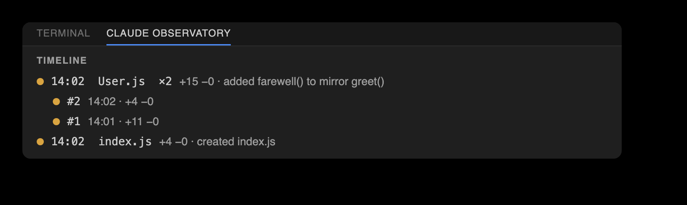

The change, right where it happened.
A gutter star marks each Claude edit; a subtle tint colors what changed. Click view changes and the diff opens inline — in git's own colors, with Claude's reasoning and Keep / Undo / Chat / View diff on hand.

Any edit, as its own before and after.
Open a single change as a dedicated diff tab and step through the file's edits with Prev / Next in the title bar — without losing your place.

Undo one edit. Keep the rest.
A position-anchored 3-way merge reverts a single change while later edits to the same file survive. File History lists just the active file's edits, newest first, and follows the editor as you switch tabs.

The session as a change feed.
Files ordered by most-recent activity, each expanding to its edits. Adjacent edits to the same file coalesce into a single run, so a busy session stays legible.

What Claude was thinking.
A zero-token session recap on top, then each edit's real reasoning parsed from the transcript. Every row carries the observatory's memory of that file — its cross-session accept/revert history, so files that get reverted often are flagged.

Progress, tokens, and usage.
A live review scoreboard — pending, accepted, reverted — with a progress bar, a token step-line plot over Today / 7 days / 30 days, and context plus 5h / week plan-usage bars.

A spotlight on the edits.
Dim every unmodified line so Claude's changes stand out. One toggle turns a heavily-edited file into a focused view of exactly what moved.

It never guesses.
When an undo would overlap later changes, the observatory refuses rather than clobber — and offers an explicit --force restore. Anchored on line positions, not fuzzy text, so it stays safe against duplicated content.

Review without leaving the shell.
The claude-observatory CLI is a first-class front-end over the same store — list, diff, keep, and surgically undo from your terminal. Its --json surface is what both editors build on.

The same tool in both editors.
VS Code and JetBrains render the identical review surfaces over one backend — icon-only tabs, inline review, and the bottom dashboards alike. Decisions made in one show up in the other.